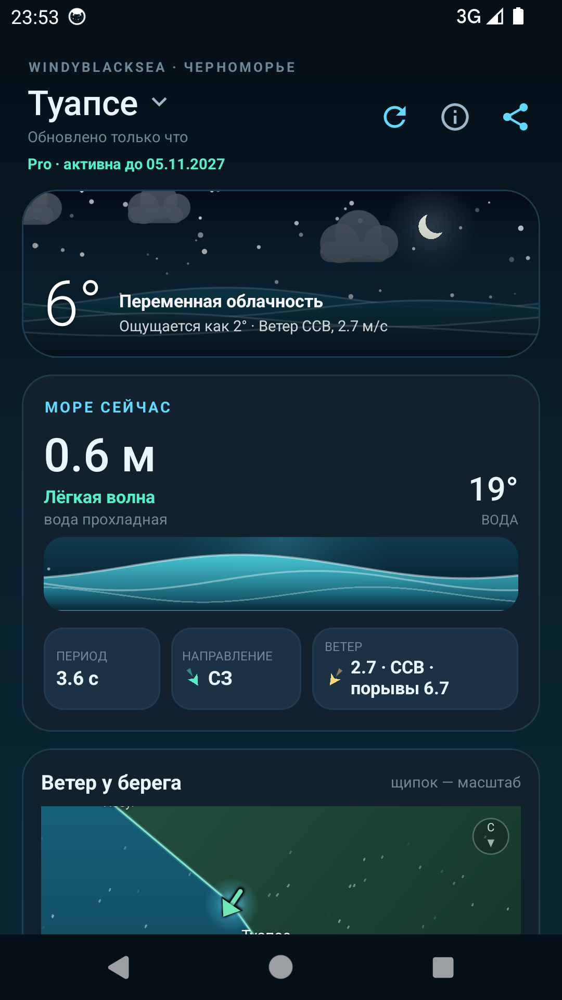
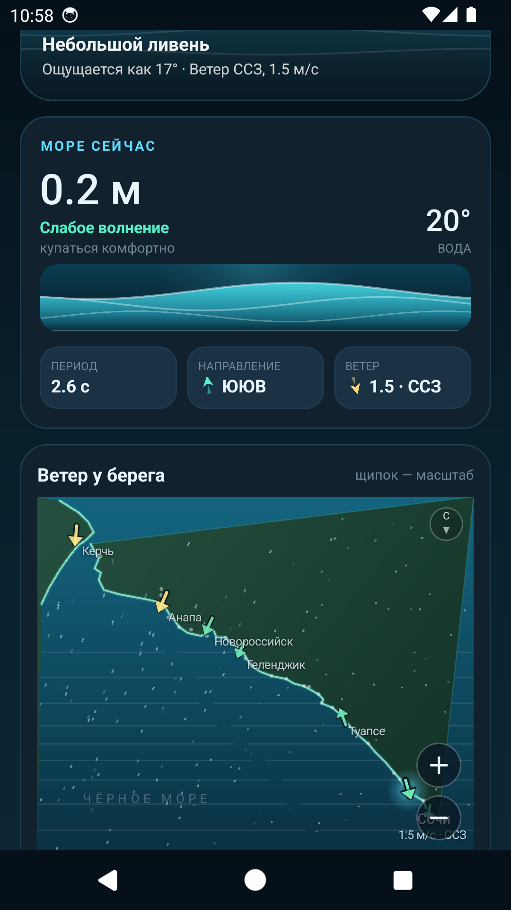

Море и погода
от Керчи до Адлера
Семь дней прогноза для каждого посёлка побережья: температура, осадки, высота и период волны, температура воды и живая карта ветра.
Бесплатная версия с рекламой · Android 7.0+ · RuStore — скоро

Приложения нет и не будет в Google Play — это осознанное решение. Бесплатная версия распространяется через RuStore, Pro — с этого сайта. Поэтому Play Защита (Play Protect) показывает «Приложение не проверено» или даже «Вредоносное ПО»: так Google помечает любой APK, скачанный не из его магазина. Это не признак проблемы — приложение подписано одним ключом и не запрашивает ничего лишнего.
- На предупреждении нажмите «Подробнее» → «Всё равно установить».
- Если такой кнопки нет: Play Маркет → аватар → Play Защита → шестерёнка → выключите «Проверять приложения с помощью Play Protect», установите APK и включите проверку обратно.
- Android 14+: «Настройки» → «Приложения» → «Специальный доступ» → «Установка неизвестных приложений» → разрешите для браузера или файлового менеджера.
- Если установка Pro поверх Lite зависла — закройте приложение, при необходимости удалите Lite и поставьте Pro заново: ключ активации продолжит работать.
В RuStore таких предупреждений нет — оттуда ставится бесплатная версия.
Что внутри
Всё, что нужно у моря: от утреннего купания до вечерней прогулки.
Прогноз на 7 дней
Максимум и минимум, состояние неба, осадки, ветер и порывы — по дням и по часам.
Состояние моря
Высота волны, её направление и период, температура воды. Понятная оценка: купаться комфортно или опасно.
Карта ветра
Поток частиц над морем и стрелки у городов. Карту можно приблизить щипком или кнопками, перетащить и выбрать точку.
30 точек побережья
Керчь, Тамань, Анапа, Новороссийск, Геленджик, Туапсе, Сочи, Адлер и десятки посёлков между ними.
Живые анимации
Небо, дождь, снег, туман и гроза рисуются под текущую погоду — с учётом дня и ночи.
Без регистрации
Никаких аккаунтов. Выбранный город запоминается, прогноз кэшируется и открывается без сети.
Как это выглядит
Тёмная тема, крупные цифры и море на каждом экране.

Без рекламы
Улучшенная версия программы без баннера и рекламного SDK. Распространяется файлом: ключ активации привязывается к устройству и действует один год.
- Полностью без рекламы
- Меньше размер APK
- 7 дней бесплатно — сразу после установки, без ключа
- Активация один раз — лицензия на 12 месяцев
- Продление — новым ключом
Для прогноза интернет нужен всегда: погода и море загружаются с серверов. После активации лицензия хранится на устройстве, но без сети прогноза не будет.
Сначала скачайте Pro-сборку, затем напишите разработчику за ключом активации:
500 ₽ · лицензия на 12 месяцев
В Pro-сборке нет рекламного SDK Яндекса, поэтому она не показывает баннеры и не обращается к рекламным сетям.
Установка
APK ставится напрямую, без магазина приложений. Выбирайте Lite (бесплатная, с баннером) или Pro (без рекламы, 7 дней бесплатно).
Нажмите «Скачать Lite версию» или «Скачать Pro версию» — файл сразу загрузится на телефон.
Откройте файл и разрешите установку из этого источника, если система спросит.
Запустите WindyBlackSea и выберите свой посёлок на карте или в списке.
Pro-версия ставится поверх бесплатной: пакет и подпись те же, поэтому выбранный посёлок, настройки и карта сохраняются. Если система всё же откажется устанавливать — удалите бесплатную версию и поставьте Pro заново (ключ активации при этом понадобится только один раз).
Версия на сайте: 1.18 · RuStore — на модерации.